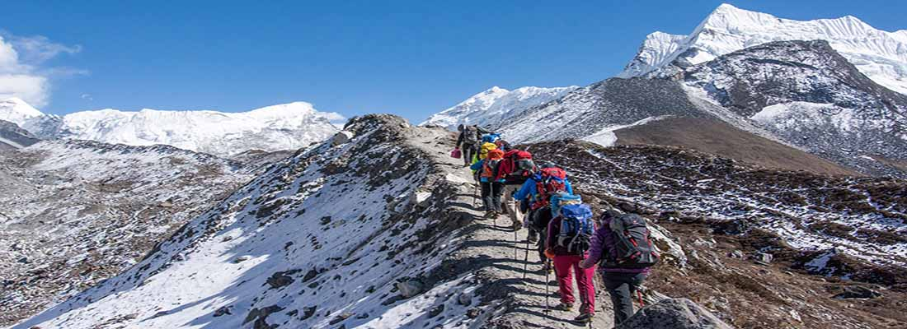

MOUNTAINTREKKING
Nepal has attracted trekkers from around the world since the 1960s when Col Jimmy Robert's organized the first commercial trek. Trekking has been the leading activity of tourists in Nepal and thousands take to the Himalayas, some doing a few days of hiking while others take on a month long trek through valleys and high mountain passes. Two of the most popular treking regions are the Everest and Annapurna where many different trails can be followed while the other popuar treks are in the Langtang and Kanchenjunga regions. The most challenging is the Great Himalayan Trails, an extensive trail system that covers Nepal from Humla and Darchula in the west to Kanchenjunga in the east. The diversity of trekking trails in Nepal cannot be found in any other part of the world. In fact, the lowest point in Nepal is 59 m above sea-level in the Tarai region while the highest point is Everest, 8,848 m above sea-level, the two points being only 200 kilometres apart as the crow flies. The majority of visitors to Nepal come in via the Tribuvan International Airport in Kathmandu. It is in Kathmandu that trekkers need to acquire their permits and other documentation, either from a trekking agent or from the appropriate offices. These documents will be checked along the trekking route. For those with little time on hand there are half-day hikes from Kathmandu to witness breathtaking Himalayan views. Trekking in Nepal today is completely different to that of the 1960s. In all the main trekking areas, the National Parks and Conservation Areas lodges have been established where trekkers can find accommodation, food and meet other trekkers and locals along the way. The majority of the trails are well maintained and in many cases are sign-posted. The lodges are well appointed and have facilities for charging batteries and the larger villages often have email facilities. The length, the difficulty and timing of the treks vary greatly and to add to that once outside of the main trekking areas transport becomes more problematic and often involves at least two journeys made on domestic scheduled flights. Many treks in Nepla begin with a domestic flight to the starting point and many are in remote areas with no road access. Several days of trekking is required to reach the higher mountain areas from the local centers of population and administration. Nepal has six distinct and diverse vegetation zones ranging from Tropical below a 1,000 m through Sub-tropical 100m - 200m, Lower Temperate 1,700 m - 2,700 m, Upper Temperate 2,400 m - 3,000 m, Sub-alpine 3,000 m - 4,000 m and Alpine 4,000 m to the snowline above the snowline it is a Himalaya tundra like wilderness. The higher altitutes are home to the elusive Snow leopard, Hamalayan Thar, Musk deer and other rare species. Although the popular treks in Kanchenjunga, Everest, Manaslu, Annapurna are able to provide lodge accommodation the less frequented treks in those areas and also in other areas west of Annapurna will generally require camping style trek support. Trekkers can find a trail any time of year. The southern areas of Nepal receive higher levels of precipitation. However, some routes along the Great Himalaya Trails lie in the rain shadow, a dry area on the leeward side of a mountain namely Mustang to the north of Annapurna and Manaslu, Dolpo to the north of Dhaulagiri and the far west of Nepal to the north of Saipal Himal. Post monsoon the weather tends to be clearer. Winter is good but colder with shorter days and spring can be affected by seasonal rain and snow storms. Summer is short and is quickly followed by the monsoons. Monsoon treks are usually in the dry Manamg and Mustang areas. However, the rains don't pour 24 hours a day and they bring spectacular flowers to life. It is also the perfect time to consider one of the regions in the rain shadow which typically feature a more barren Tibetan type scenery as opposed to the greenness on other side. It is important for tourists to know that the main income generating activity of the people from the hill regions is tourism, and they typically earn wages working as trekking porters or guides. Hiring a porter does not mean that you are weak, it means you value the Nepali culture, you are providing an extended Nepali family with an income and at the same time you are making a friend and trekking with a local person who is well versed in the local cultures, festivals, and all the other issues that can turn a good trek into an outstanding experience of a life time. It is possible to trek alone or without a Nepali guide, but you wuld not know what to do in a major storm, zero visibility and plunging temperatures at possibly 5,000 m? Make sure you have all the permits required, and be environmentally and culturally aware.